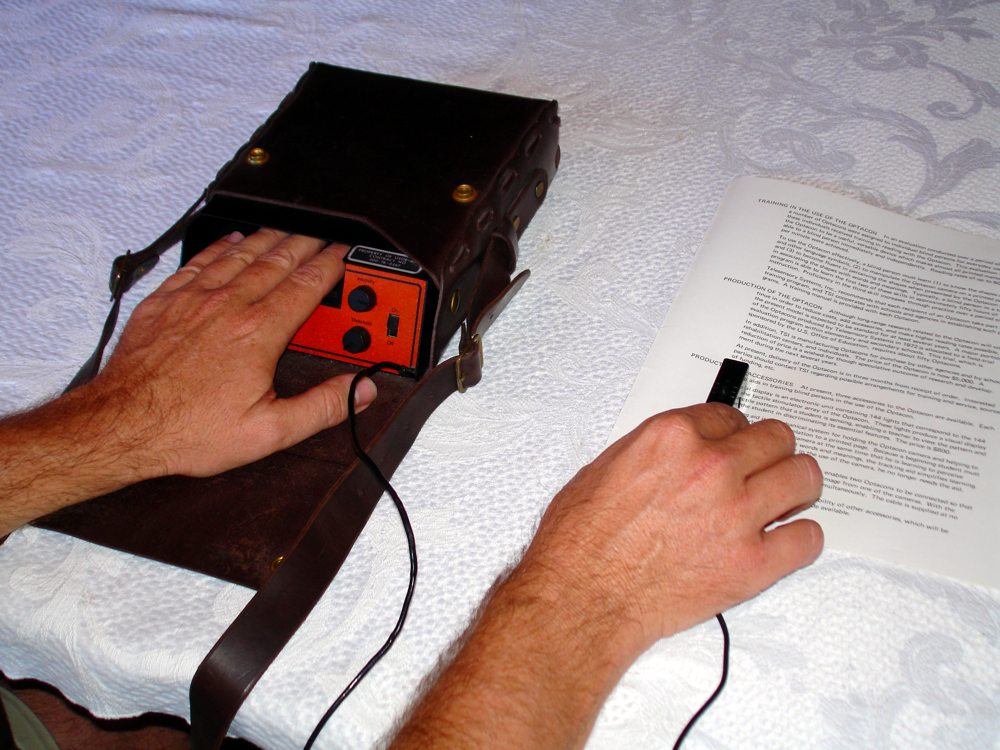

Optacon II (Tactile Reading Machine)
Feel the shape of a printed letter vibrating against your fingertip, in real time — no OCR, no speech

Overview
The Optacon (OPtical to TActile CONverter) is an electromechanical sensory-substitution reading machine for the blind, conceived at Stanford University in 1962 by EE professor John G. Linvill — motivated by his daughter Candy, blind from age three — and developed with James C. "Jim" Bliss at the Stanford Research Institute (SRI). The device shipped commercially in 1971 from Telesensory Systems Inc. (TSI) of Mountain View, CA, the startup Linvill and Bliss co-founded around 1970 to commercialize it. The user slides a small handheld camera probe across printed text; a custom 24×6 silicon-retina phototransistor array images a single letter-space, and the thresholded black/white image is mapped 1:1 onto a 24×6 (144-pin) tactile array of piezoelectric bimorph-driven metal rods vibrating against the user's index finger at ~250–300 Hz. The user "reads" by feeling the shape of letters as vibrating dot patterns moving across the fingertip — direct visual-to-tactile substitution with no OCR and no text-to-speech. Reading speeds of 30–100 wpm were typical after extensive training. Roughly 15,000 units were sold over the product's 25-year life. In 1985, TSI partnered with Canon Inc. to release the Optacon II, a redesigned model with improved packaging and a computer/terminal interfacing capability, allowing users to read CRT screens via special lens modules. The Optacon II was commercially unsuccessful — a cost-driven decision reduced the tactile array from 144 to 100 pixels, hurting usability. TSI discontinued the Optacon line in 1996 and shut down entirely in 2005.
Deep dive
John G. Linvill, then a Stanford EE professor, conceived the Optacon in 1962 during a sabbatical in Switzerland after seeing an IBM pin-printer in Germany. His daughter Candy had been blind since age three, and he wanted a device that would let her read ordinary printed material without waiting for Braille transcription. Linvill filed the foundational patent (US 3,229,387, granted Jan 1966) and co-authored the foundational IEEE paper with Jim Bliss in 1966. Bliss, an SRI researcher with a doctorate in tactile displays, joined the Stanford faculty half-time to lead the tactile psychophysics, bimorph-driven pin array, and optics. Together they co-founded Telesensory Systems Inc. (TSI) around 1970 to commercialize the device; Linvill served as Chairman of the Board.
The Optacon is a two-part device. A small handheld camera module (~the size of a penknife) contains a custom monolithic 24×6 silicon-retina array of phototransistors, an LED illuminator, and a simple lens; the user manually slides the camera left-to-right across a line of print. A thin cable runs to the main electronics unit, which contains a 24-row × 6-column matrix of tiny metal rods (144 total), each driven by a piezoelectric bimorph reed vibrating at ~250–300 Hz. Rows are spaced 1 mm apart, columns 2 mm apart — fitting within an index fingertip. Black pixels in the camera image trigger vibration of the corresponding pins; white pixels do not. As the camera moves, tactile letter-shapes flow across the finger, mirroring the printed text in real time. Controls are minimal: an intensity knob (vibration strength), a threshold knob (black/white cutoff), and a polarity switch (dark-on-light vs. light-on-dark text). The Optacon II reduced the array to 100 pins to lower cost but added a computer-interface capability and special lens modules for typewriters, calculators, and CRT screens. Pure sensory substitution: no OCR, no storage, no speech synthesis — the user does the recognition.
The original Optacon shipped in 1971 at a price of around $3,500 (later dropping as low as $1,500 with insurance subsidies), with battery operation. The 1972 "one-hand" redesign (suggested by Harry Garland, built by Roger Melen and Max Maginness at Stanford) consolidated the camera and tactile array into a single hand-held unit. Throughout the late 1970s and early 1980s, TSI added lens modules for typewriters, calculator screens, and computer terminals — extending the reading surface beyond paper. The Optacon II (1985), co-developed with Canon Inc., was a substantial redesign with improved packaging and a dedicated computer interface; its tactile array was reduced from 144 to 100 pins in a cost-driven decision that hurt usability and limited its market. Roughly 15,000 total units were sold across the 1971–1996 production life. TSI discontinued the Optacon line in 1996 and shut down entirely in March 2005. The Computer History Museum (Mountain View) holds the S-15 prototype (1971, IR-100 Award winner); the Museo Tiflológico (Madrid) also holds an Optacon in its collection.
The Optacon is foundational in two HCI lineages. First, sensory-substitution interfaces: it is one of the earliest and most commercially successful devices to map one human sense onto another in real time, predating modern visual-to-auditory and visual-to-tactile substitution research by decades. The user's finger becomes a live image sensor — the pin array is a tactile retina. Second, assistive technology as a Silicon Valley industry: TSI was an early Bay Area startup explicitly founded to commercialize a disability-focused hardware device, supported by federal Office of Education and ONR funding. The Optacon II (1985) marks the moment the device gained a computer interface, moving it from paper-only to screen-reading and bridging the standalone-instrument era and the PC era. It is also a sobering case study in cost-driven design: the Optacon II's reduction from 144 to 100 pins degraded the user experience so badly that long-time Optacon users largely stuck with the older model.
Team & pioneers
- John G. Linvill. Stanford EE professor (later EE Dept. Chair). Conceived the Optacon in 1962 during a Swiss sabbatical after seeing an IBM pin-printer; filed foundational patent US 3,229,387 (1966). Motivated by his daughter Candy (blind from age 3). Co-founded Telesensory Systems Inc. (~1970); served as Chairman of the Board.
- James C. "Jim" Bliss. SRI researcher (formerly MIT, doctorate in tactile displays); joined Stanford faculty half-time. Led tactile psychophysics, the bimorph-driven pin array, and the optics. Co-founded TSI with Linvill.
- Telesensory Systems Inc. (TSI). Silicon Valley / Mountain View, CA startup founded by Linvill and Bliss around 1970 specifically to commercialize the Optacon. Manufactured the Optacon 1971–1996; shut down March 2005.
- Canon Inc.. Japanese imaging company. Partnered with TSI in 1985 to develop the Optacon II (improved packaging + computer-interface capability).
- Stanford & SRI contributors. Stanford graduate students J.S. Brugler, J.D. Plummer, Roger Melen, P. Salsbury, G.J. Alonzo, John Hill, Charles Rogers, Jon Taenzer worked on the silicon retina, bimorph drivers, tactile frequency, and reading-rate experiments. SRI contributors included James Baer and John Gill (optics & packaging). Harry Garland suggested and Roger Melen & Max Maginness built the 1972 one-hand redesign.
Media

Sources
- Wikipedia: Optacon
- Linvill, J.G. & Bliss, J.C. (Jan 1966). 'A Direct Translation Reading Aid for the Blind,' Proceedings of the IEEE, Vol. 54, No. 1, pp. 40–51
- Linvill, J.G. (March 1973). Final Report: Research and development of Tactile Facsimile Reading Aid for the Blind. Stanford Electronics Laboratories
- Bliss, J.C. (March 1969). 'A Relatively High-Resolution Reading Aid for the Blind,' IEEE Trans. Man-Machine Systems, Vol. MMS-10, No. 1, pp. 1–9
- Wikimedia Commons: Optacon category (multiple PD/CC-licensed images by DrBliss)
- NFB Braille Monitor: 'The Optacon: Past, Present, and Future'
- Computer History Museum Optacon collection (S-15 prototype)